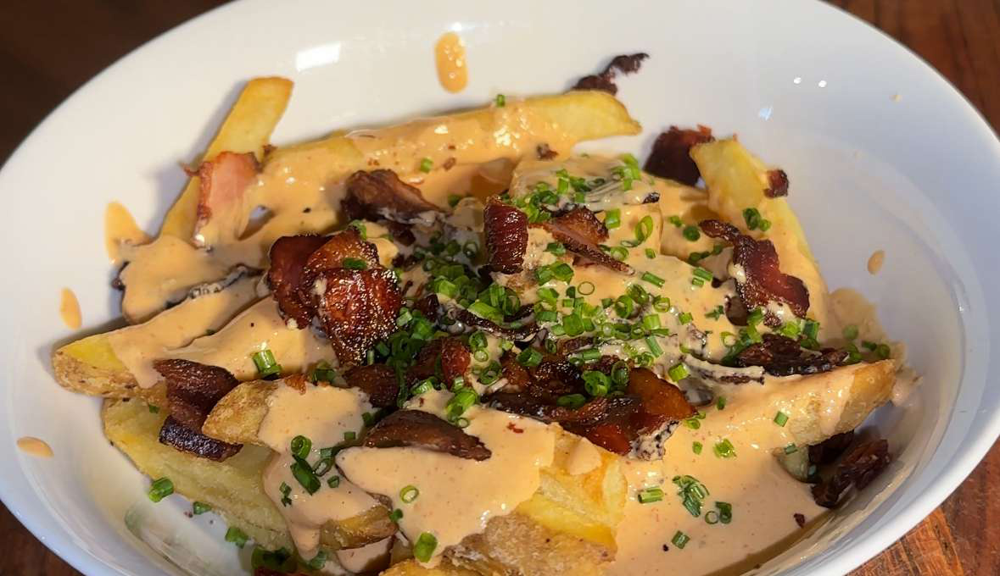

Chipotle Queso Loaded Fries

15 minutes
675 kcal • 42g protein • 42g fat • 36g carbs
Ingredients
- 3-4 slices or ~80g centre cut (streaky) bacon
- 200g Oven Chips (I used Rustic
- Skin on Fries from Potato Utopia)
- 120g High Protein Cottage Cheese
- 30g Low Fat Cheddar
- 30ml Low Fat Free Milk
- Garlic powder, chili powder,
- smoked paprika and salt
- 2 Tsp Chipotle in Adobo Sauce
- Chiles
- Fresh Chives (optional arnish)
Steps
- Pop chips in oven or air fryer & cook according to packet instructions
- 2. Fry off diced bacon (I like starting over medium heat so fat renders out, then turning heat up)
- In a blender cup add: cottage cheese, cheese, low fat milk, seasonings, chipotle peppers & blend until smooth
- Add components into a bowl & top with chives for garnish
- Bosh
Source: “Healthy Meals that DON'T SUCK 2025” (PDF) — page 57